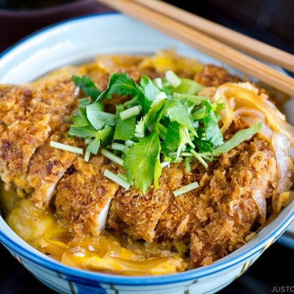

Katsudon

What you can hope your finished dish will look like!
Katsudon is an awesome Japanese dish. It consists of pork cutlet which has been breaded and deep fried, then sliced, and finally added to scrambled eggs and served over rice.
Ingredients
- 4 - Thin Sliced Pork Chops
- 4 - Eggs
- 2 Cups - White Rice
- Panko
- Flour
- Green Onions
- Shoyu
- Mirin
- Sake
Steps
- Take thin sliced pork chops, and after patting dry, dredge in flour, 1 scrambled egg, and panko.
- Fry pork chops in veggie oil a large skillet.
- Once fried on both sides, place on paper towel on cutting board to remove excess oil.
- Turn skillet to low, discard excess oil, and add combined sauce mixture of 2 tbps of shoyu, mirin, and sake to pan to carmalize.
- Slice fried pork chops into thin strips.
- Whisk 3 remaining eggs together in bowl, set aside.
- Add sliced pork chops back to sauce to coat.
- Pour egg mixture over pork chops, then cover with lid until eggs cook through.
- Serve over rice with sliced green onions and sesame seeds.